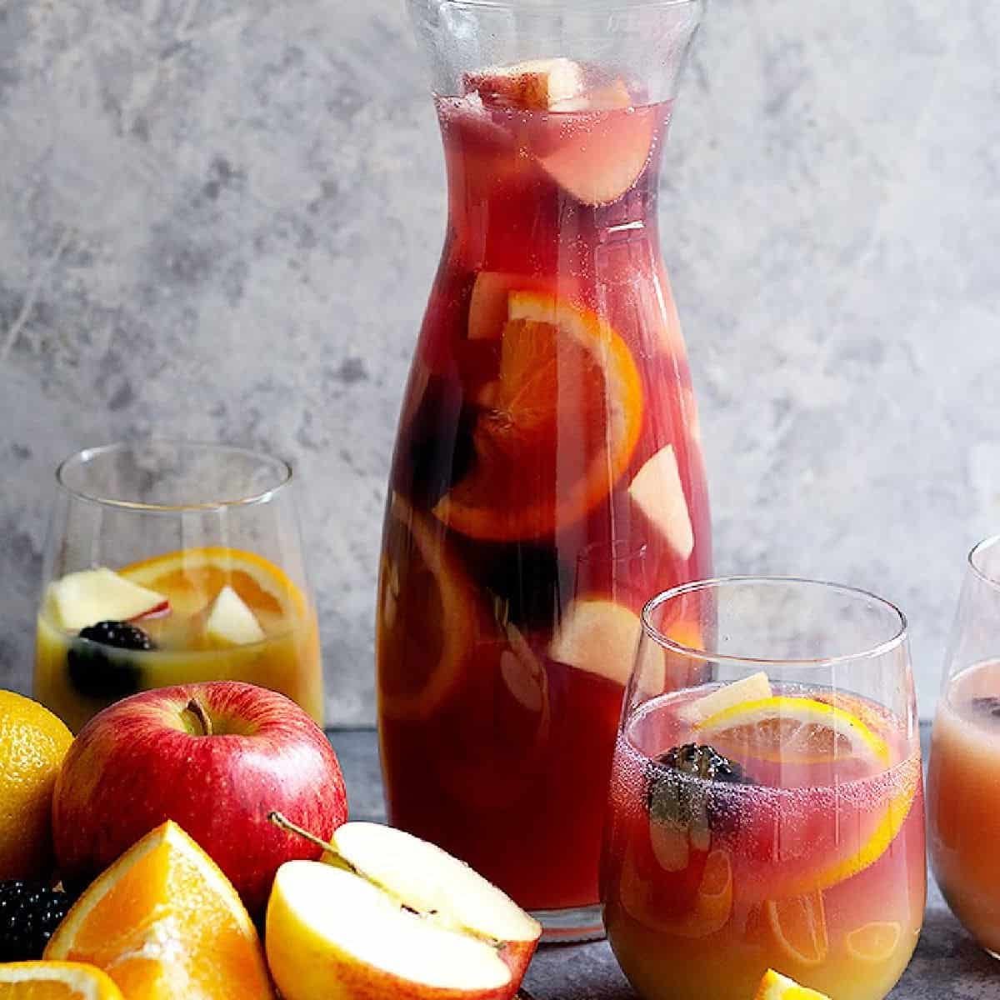

Odin Recipes
What is Sangria
When you need a crowd-pleasing cocktail, sangria is the obvious choice. A pitcher of sangria is the perfect summer drink to sip on at your backyard barbecue or party. So, let us introduce you to the best sangria recipe on the internet. It's easy to make and, even better, it's irresistibly delicious.
Sangria is an alcoholic punch that originated in Spain and Portugal. There are two common varieties: red sangria and white sangria. It's typically made with wine, liqueur, sparkling water, fruit juice, and lots of sliced fruit.
Ingredients
- 1 (750 milliliter) bottle dry red wine
- ½ cup brandy
- ½ cup triple sec
- ⅓ cup frozen lemonade concentrate
- ⅓ cup orange juice
- ¼ cup lemon juice
- ¼ cup white sugar (Optional)
- 1 medium orange, sliced into rounds
- 1 medium lemon, sliced into rounds
- 1 medium lime, sliced into rounds
- 8 maraschino cherries
- 2 cups carbonated water (Optional)
Steps
- Gather all ingredients.
- Mix together red wine, brandy, triple sec, lemonade concentrate, orange juice, lemon juice, and sugar in a bowl. Add orange, lemon, and lime slices and maraschino cherries.
- Serve immediately over ice, or refrigerate 8 hours to overnight for best flavor. For a fizzy sangria, add club soda just before serving.
Sangria recipes

What is the best wine for sangria?
Learn how to make authentic Spanish sangria with this easy sangria recipe. It only takes a few minutes to prep, it’s easy to customize with your favorite wine and fruit, and it’s great for entertaining a crowd!
Spanish Sangria Ingredients
- Spanish red wine
- Brandy
- Fresh chopped fruit
- Cinnamon stick
- Sweetener
- Bubbles
Steps
- Chop your fruit: Dice the orange, lemon and green apple into evenly-sized pieces.
- Chop your fruit: Dice the orange, lemon and green apple into evenly-sized pieces.
- (Optional) Add sweetener: If you prefer a sweeter sangria, feel free to add in a tablespoon or two of sweetener at a time until the sangria reaches your desired level of sweetness.
- Cover and refrigerate: Pop the pitcher in the fridge for at least 30 minutes or up to 4 hours before serving, in order to let those flavors meld together.
- Serve: Then serve the sangria over ice, topping off each glass with a splash of bubbly soda (or sparkling water) if desired.
Easy Sangria

Easy Sangria Ingredients
- Red Wine
- Fruit
- Spices
- Sugar
- Soda
Steps
- Make a simple syrup. I like to use a 1:1 ratio of water to granulated sugar by volume. Let it cool while you prepare the rest of the sangria.
- Peel and juice the lemons.
- Peel and juice the oranges.
- Pour the wine into a big pitcher or pot and add the citrus juice and rinds. Add simple syrup to taste.
- Stir everything until it's well combined.
- Add the spices, any additional fruit, and brandy or alcohol (if using).
- Voila! You made traditional Spanish sangria to enjoy with your favorite tapas. If you want to use soda, add it right before drinking.